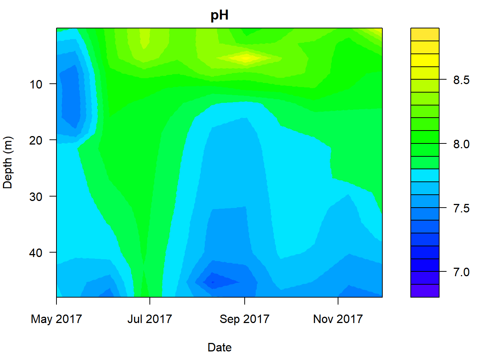

# First, we convert the date column
# to a character string. We pass the
# result directly to the as.Date
# function, and along with that we
# specify a format so R knows where it
# is looking for specific elements of
# the date info we are trying to pass.
otsego$date <- as.Date(
as.character(otsego$date),
format="%m/%d/%Y"
)
# Remove NA values to make life easier
lim <- na.omit(otsego)
# Multiply depth column by -1 so depth will
# plot from top to bottom.
lim$depth = -1 *lim$depthakima package:We interpolate pH across date and depth. The interpolation we are using is basically just a bunch of linear regresions to predict pH for values of date and depth across a regular grid. Then, we make the plot.
# Create a data frame containing the
# x, y, and z variables of interest
plotter = data.frame(x=lim$date, y=lim$depth, z=lim$pH)
# Sort it so we have ascending values of x and y
plotter = plotter[with(plotter, order(x, y)), ]
# Make a regularly spaced x, y, z grid using
# linear interpolation from the akima package
im = with(plotter,
interp(x, y, z, duplicate='mean',
nx=length(unique(lim$date)),
ny=length(unique(lim$depth)))
)
# Plot the isopleth
# Set up plotting window margins
par(mar=c(4, 4, 2, 8))
# Make the graph
filled.contour(
im$x, # Variable on x-axis (date)
im$y, # Variable on y-axis (depth)
im$z, # Response (wq parameter)
col=topo.colors(26),
main = 'pH',
# Specify y-axis limits.
ylim=c(min(im$y), max(im$y)),
# Specify x-axis limits. In
# this case, we are "zooming in"
# on year 2017
xlim=c(as.Date('2017/05/01'), max(im$x)),
# X-axis label
xlab='Date',
# Y-axis label
ylab='Depth (m)',
# Axis options
plot.axes = {
# This is how we include
# countour lines
contour(
im$x,
im$y,
im$z,
nlevels = 26,
drawlabels = FALSE,
col = topo.colors(26),
lwd = 1,
lty = 2,
add = TRUE
)
# Y-axis
axis(2, at=seq(0,-50,-10),
labels=seq(0,50,10)
)
# X-axis
axis(1,
at=seq(as.Date("2017/05/01"),
by="2 months",
length.out=16
),
labels = format(
seq(as.Date("2017/05/01"),
by="2 months",
length.out=16
),
"%b %Y"
)
)
}
) 
This work is licensed under a Creative Commons Attribution 4.0 International License. Data are provided for educational purposes only unless otherwise noted.